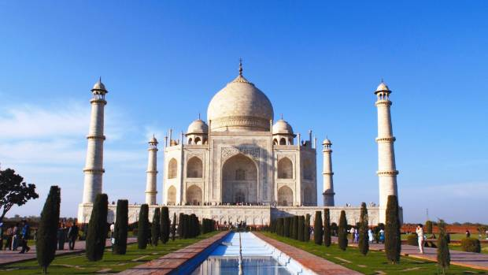

Le Taj Mahal (en devanagari ताजमहल, en persan تاج محل qui signifie « la couronne du palais » — mais ce nom peut aussi être vu comme une corruption de Mumtaz Mahal1) est situé à Agra, au bord de la rivière Yamuna, dans l'État de l'Uttar Pradesh, en Inde. C'est un mausolée de marbre blanc construit par l'empereur moghol musulman Shâh Jahân en mémoire de son épouse Arjumand Bânu Begam, aussi connue sous le nom de Mumtaz Mahal, qui signifie en persan « lumière du palais ». Celle-ci meurt le 17 juin 1631 en donnant naissance à leur quatorzième enfant, alors qu'elle accompagnait son mari pendant une campagne militaire. Elle trouve une première sépulture sur place dans le jardin Zainabad à Burhanpur. La construction du mausolée commence en 1631 et s'achève dans sa plus grande partie en 1648. Son époux, mort le 31 janvier 1666, est inhumé auprès d'elle. Le Taj Mahal est considéré comme un joyau de l'architecture moghole, un style qui combine des éléments architecturaux des architectures islamique, iranienne, ottomane et indienne. Il est considéré que l'architecte principal fut Ustad Ahmad Lahauri de Lahore. Visité par plus de 6 millions de touristes en 2019, c'était le site le plus touristique d'Inde et un des dix monuments les plus visités au monde.